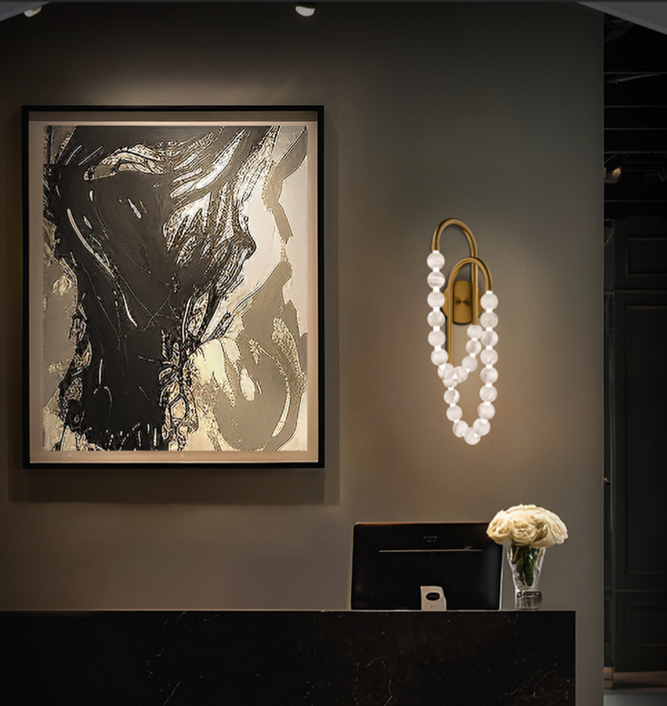
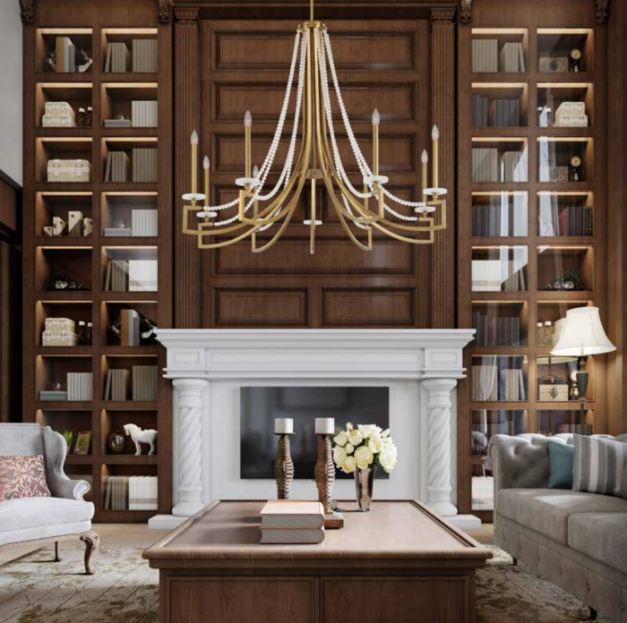

You've found the perfect fixture — and then the dropdown menu hits you: Aged Brass, Polished Nickel, Matte Black, Oil-Rubbed Bronze, Gunmetal. Which one? Does it need to match your faucet? Your cabinet hardware? Your door knobs? Here's the reassuring truth from the design world: matching everything is out, and has been for years. Today's best rooms mix finishes — deliberately. This guide teaches you the simple system designers use to pick finishes with confidence, so your room reads as intentional, never accidental.
The Short Answer
The One Rule That Changed: Matching Is Optional
For decades the "safe" advice was to pick one metal and repeat it on every fixture, faucet, and knob. Designers now consider that look dated — the interiors equivalent of a matching tracksuit. The modern standard is a curated mix: one dominant finish carrying the room, one or two accents adding depth. The goal isn't matching; it's cohesion. And cohesion comes from a few learnable rules, not luck.
Know Your Finishes: The Warm/Cool/Neutral Map
Every metal finish has a temperature, and temperature is what makes combinations work or clash.
Warm finishes
Undertones of yellow, orange, red
- Brass — from bright polished brass to soft satin brass to moody antique/aged brass
- Unlacquered brass — raw brass with no protective coating; patinas with age (see timeline below)
- Bronze / oil-rubbed bronze — deep brown-black warmth
- Copper / champagne / gold tones
Cool finishes
Undertones of blue, gray
- Chrome — mirror-bright, modern, reflective
- Polished nickel — chrome's warmer, richer cousin
- Brushed/satin nickel — soft gray, low-glare
- Gunmetal / pewter — smoky, deep grays
Neutral finishes
Pair with anything
- Matte black — the universal mixer
- White and plaster tones
- Deep bronze and iron — dark enough to function as neutrals
Two practical notes: polished (shiny) finishes reflect light and demand attention; brushed and matte finishes recede and add texture. And sheen counts as contrast too — polished brass against brushed brass reads as two different materials even though they're the same metal.
The Designer's Formula: Dominant + Accent
Here's the system, in four steps:
- Pick one dominant finish — it should cover roughly 60–80% of the metal moments in the room, and it usually lives on the largest, most visible pieces: the chandelier or main pendants, and often the plumbing or appliances. Match the dominant finish to the room's color temperature: warm-toned rooms want a warm dominant like brass or bronze; cool-toned rooms want nickel, chrome, or gunmetal. Our chandelier sizing guide helps you size the dominant dining fixture.
- Add one or two accent finishes — never more than three total. The classic split is about two-thirds dominant, one-third accent. The accent should contrast with the dominant — warm against cool, dark against light, matte against polished.
- Repeat every finish at least twice in the room, at different heights. One lonely brass sconce looks like an error; brass sconces echoed by a brass mirror frame or cabinet pulls looks designed.
- Keep finishes consistent within an item group. All the island pendants match each other. All the vanity sconces match each other. Mix between groups — lighting vs. hardware vs. plumbing — not within them.


The Combinations That Always Work
- Aged or satin brass + matte black — the modern classic; warm and graphic
- Polished nickel + brass — elevated traditional pairing
- Matte black + brushed nickel/gunmetal — cool, quiet, contemporary
- Bronze + brass — layered warmth for organic, earthy rooms
- Chrome + matte black — crisp and modern
- Mixed-finish fixtures — black frame, brass sockets; the zero-effort mixed-metal room
The Combinations to Avoid
- Near-twins: chrome + polished nickel, or chrome + brushed nickel — pick one silver-tone.
- Sibling brasses in one room: satin next to polished next to antique brass looks like a shopping mistake.
- More than three finishes in one room (four across a large open plan is the ceiling).
- A finish that appears exactly once — repeat it or remove it.
- Bargain "metallic" finishes on statement fixtures — quality plating reads from across the room.
What Designers Are Doing Right Now (2026)
- Living finishes are the story of the moment. Unlacquered brass starts bright and golden, then mellows into deeper amber tones and soft patina with use. Fingerprints and darkening are the point, not a defect.
- Mixing is the default, not the exception. Current schemes layer brass with bronze, chrome with blackened metals, warm with cool.
- Warm has won. Satin brass remains the designer favorite; satin bronze is rising fast; warm minimalist palettes pull finishes warmer.
- Gunmetal is the new cool-tone star — smokier than chrome, mixing gracefully with brass.
- Matte black is maturing — shifting from star to grounding neutral that lets warm metals shine.
- Texture is a finish trend too: hammered brass and brushed, tactile surfaces over high polish.
Bright, golden brass
Warm amber mellowing
Deep, living patina
A Room-by-Room Cheat Sheet
- Kitchen: the easiest room to mix — appliances (stainless = cool), plumbing, lighting, and hardware are four separate item groups. A classic 2026 scheme: satin brass island pendants (dominant warmth), matte black hardware (grounding accent), stainless appliances reading as neutral-cool. See our kitchen lighting layout guide for pendant count and spacing.
- Bathroom: keep all plumbing one finish, then contrast through lighting and mirror. Polished nickel plumbing + brass sconces + a bronze-framed mirror is a proven designer trio.
- Dining room: the chandelier is the dominant-finish statement; echo it once (curtain hardware, buffet lamps, frames). Use our chandelier sizing guide to size the anchor fixture.
- Exterior: match sconces, post lights, and path fixtures in one finish family — brass with brass, black with black — so the facade reads composed from the curb. See our outdoor lighting guide for sizing and placement.
- Whole home: choose two or three finishes as your home's palette and thread at least one through every room — especially in open floor plans. Pair finish choices with consistent color temperature and layered lighting for cohesion.
The 60-Second Decision Framework
- What's the room's color temperature — warm or cool? → That's your dominant finish family.
- What's already fixed (appliances, existing plumbing, flooring hardware)? → Work with it, not against it.
- Pick the dominant finish; put it on the biggest fixture.
- Pick one contrasting accent (when in doubt: matte black with warm rooms, brass with cool rooms).
- Repeat both finishes at least twice, at different heights.
- Stop at three finishes. Done.
Quick Answers
Do light fixtures need to match faucets and cabinet hardware?
No — matching everything reads as dated. Aim for one dominant finish plus one or two intentional contrasts, repeated around the room.
How many metal finishes can you mix in one room?
Two or three. One dominant (roughly two-thirds or more of the metal in the room), the rest as accents.
Can you mix brass and black?
Yes — it's the most reliable pairing in modern design. Brass brings warmth, black grounds it.
Can you mix chrome and brushed nickel?
Avoid it — they're too similar and look like a near-miss rather than a choice. Pick one silver-tone per room.
What is unlacquered brass?
Solid brass with no protective coating, so it develops a natural patina and darkens with age. Designers love it for its living, evolving character — but choose lacquered or satin brass if you want the finish to stay unchanged.
What finish is most popular right now?
Warm finishes lead: satin/aged brass is the designer staple, satin bronze and gunmetal are rising, and matte black remains the go-to grounding accent.
Ready to shop?
Every fixture at LogicX shows its available finishes with large swatch photography, and many of our Visual Comfort, Hinkley, Hubbardton Forge, and Crystorama collections offer coordinated families across chandeliers, pendants, and sconces. Torn between two finishes? Send us a photo of your space and our specialists will recommend the pairing, free.